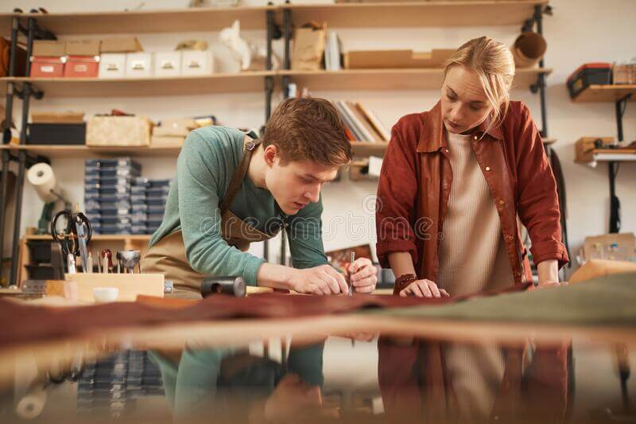

Furnarius Rufus también conocido como hornero en Argentina, se trata de una especie de ave monógina que construye un característico nido de barro en árboles, construcciones y otras estructuras. El nido es construido tanto por el macho como por la hembra en un período de tiempo que varía entre los cuatro días hasta alrededor de un mes dependiendo de la disponibilidad de los materiales. Al igual que una pareja de horneros mi mujer y yo somos de Argentina y trabajamos codo a codo para hacer productos de cuero con la intencion de que duren con el pasar de los años.
Furnarius Leather Goods